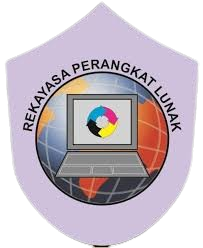

Selamat datang di Website Pengalaman PKL
Website ini dibuat untuk berbagi pengalaman Praktik Kerja Lapangan (PKL) saya yang dilakukan di perusahaan yang bergerak di bidang Rekayasa Perangkat Lunak (RPL). Di sini, saya akan membagikan berbagai pengalaman yang saya dapatkan selama PKL, serta proyek yang saya kerjakan.
Pengalaman PKL
Selama menjalani PKL di PT THASA INDONESIA, saya terlibat dalam berbagai proyek yang berfokus pada pengembangan perangkat lunak, termasuk aplikasi berbasis web dan desktop. Beberapa pengalaman yang saya dapatkan adalah sebagai berikut:
- Proyek 1: Pengembangan Aplikasi Web - Terlibat dalam pengembangan aplikasi berbasis web menggunakan HTML, CSS, dan JavaScript.
- Proyek 2: Mengoperasikan Bio Finger - Belajar mengelola perangkat fingerprint untuk pendataan absen karyawan.
Pengalaman ini memberikan saya wawasan tentang pengembangan perangkat lunak dan kerja di industri ini.
Keahlian yang Diperoleh
Selama PKL, saya memperoleh keahlian berikut:
- Pengembangan aplikasi web dengan HTML, CSS, dan JavaScript.
- Manajemen database menggunakan MySQL dan pembuatan query SQL.
- Pengembangan aplikasi desktop menggunakan C# dan Visual Studio.
- Bekerja dalam tim untuk mengembangkan proyek perangkat lunak.
- Mengimplementasikan metodologi agile dalam proyek perangkat lunak.